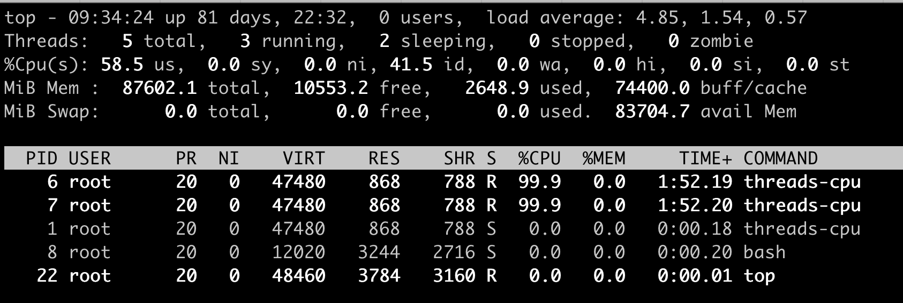
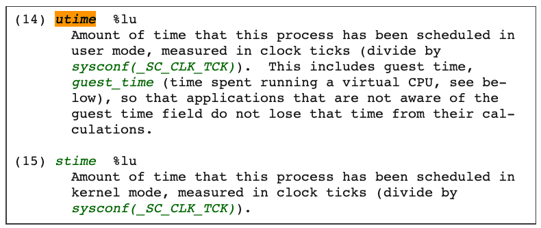
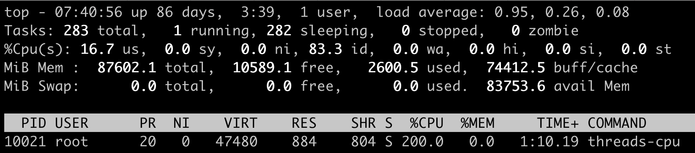
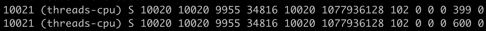
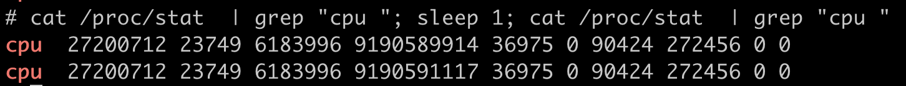
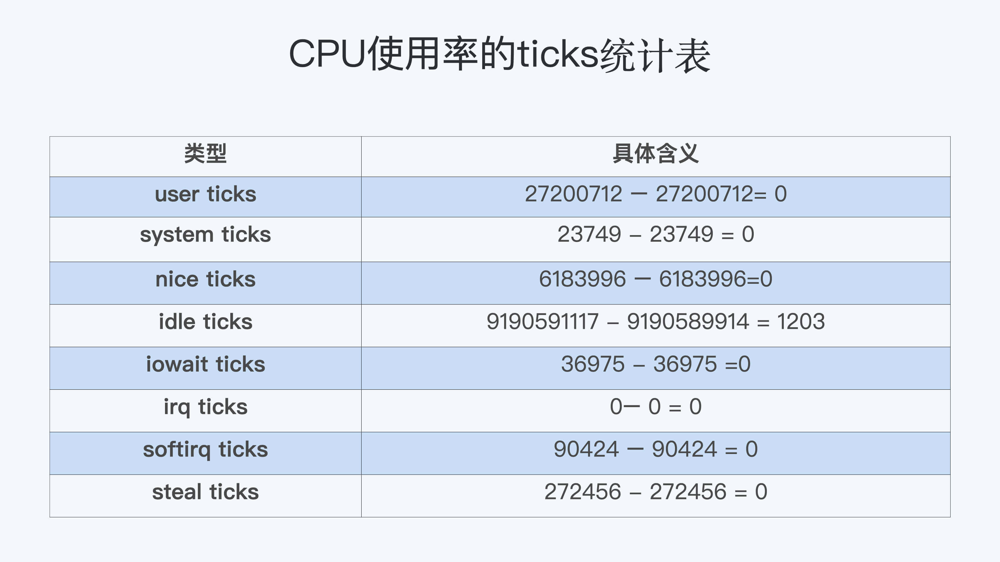
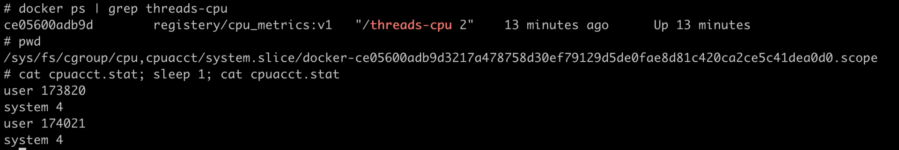

- 00 开篇词 一个态度两个步骤，成为容器实战高手.md
- 01 认识容器：容器的基本操作和实现原理.md
- 02 理解进程（1）：为什么我在容器中不能kill 1号进程？.md
- 03 理解进程（2）：为什么我的容器里有这么多僵尸进程？.md
- 04 理解进程（3）：为什么我在容器中的进程被强制杀死了？.md
- 05 容器CPU（1）：怎么限制容器的CPU使用？.md
- 06 容器CPU（2）：如何正确地拿到容器CPU的开销？.md
- 07 Load Average：加了CPU Cgroup限制，为什么我的容器还是很慢？.md
- 08 容器内存：我的容器为什么被杀了？.md
- 09 Page Cache：为什么我的容器内存使用量总是在临界点.md
- 10 Swap：容器可以使用Swap空间吗？.md
- 11 容器文件系统：我在容器中读写文件怎么变慢了？.md
- 12 容器文件Quota：容器为什么把宿主机的磁盘写满了？.md
- 13 容器磁盘限速：我的容器里磁盘读写为什么不稳定_.md
- 14 容器中的内存与IO：容器写文件的延时为什么波动很大？.md
- 15 容器网络：我修改了_proc_sys_net下的参数，为什么在容器中不起效？.md
- 16 容器网络配置（1）：容器网络不通了要怎么调试.md
- 17 容器网络配置（2）：容器网络延时要比宿主机上的高吗.md
- 18 容器网络配置（3）：容器中的网络乱序包怎么这么高？.md
- 19 容器安全（1）：我的容器真的需要privileged权限吗.md
- 20 容器安全（2）：在容器中，我不以root用户来运行程序可以吗？.md
- 加餐01 案例分析：怎么解决海量IPVS规则带来的网络延时抖动问题？.md
- 加餐02 理解perf：怎么用perf聚焦热点函数？.md
- 加餐03 理解ftrace（1）：怎么应用ftrace查看长延时内核函数？.md
- 加餐04 理解ftrace（2）：怎么理解ftrace背后的技术tracepoint和kprobe？.md
- 加餐05 eBPF：怎么更加深入地查看内核中的函数？.md
- 加餐06 BCC：入门eBPF的前端工具.md
- 结束语 跳出舒适区，突破思考的惰性.md
06 容器CPU（2）：如何正确地拿到容器CPU的开销？
你好，我是程远。今天我们聊一聊，如何正确地拿到容器CPU的开销。
为啥要解决这个问题呢，还是来源于实际工作中的需要。
无论是容器的所有者还是容器平台的管理者，我们想要精准地对运行着众多容器的云平台做监控，快速排查例如应用的处理能力下降，节点负载过高等问题，就绕不开容器CPU开销。因为CPU开销的异常，往往是程序异常最明显的一个指标。
在一台物理机器或者虚拟机里，如果你想得到这个节点的CPU使用率，最常用的命令就是top了吧？top一下子就能看到整个节点当前的CPU使用情况。
那么在容器里，top命令也可以做到这点吗？想要知道答案，我们还是得实际动手试一试。
问题重现
实际上，你在使用容器的时候，如果运行top命令来查看当前容器总共使用了多少CPU，你肯定马上就会失望了。
这是因为我们在容器中运行top命令，虽然可以看到容器中每个进程的CPU使用率，但是top中"%Cpu(s)"那一行中显示的数值，并不是这个容器的CPU整体使用率，而是容器宿主机的CPU使用率。
就像下面的这个例子，我们在一个12个CPU的宿主机上，启动一个容器，然后在容器里运行top命令。
这时我们可以看到，容器里有两个进程threads-cpu，总共消耗了200%的CPU（2 CPU Usage），而"%Cpu(s)"那一行的"us cpu"是58.5%。对于12CPU的系统来说，12 * 58.5%=7.02，也就是说这里显示总共消耗了7个CPU，远远大于容器中2个CPU的消耗。

这个例子说明，top这个工具虽然在物理机或者虚拟机上看得到系统CPU开销，但是如果是放在容器环境下，运行top就无法得到容器中总的CPU使用率。那么，我们还有什么其他的办法吗？
进程CPU使用率和系统CPU使用率
通过问题重现，我们发现top工具主要显示了宿主机系统整体的CPU使用率，以及单个进程的CPU使用率。既然没有现成的工具可以得到容器CPU开销，那我们需要自己开发一个工具来解决问题了。
其实我们自己推导，也没有那么难。我认为，最有效的思路还是从原理上去理解问题。
所以，在解决怎样得到单个容器整体的CPU使用率这个问题之前，我们先来学习一下，在Linux中到底是如何计算单个进程的CPU使用率，还有整个系统的CPU使用率的。
进程CPU使用率
Linux中每个进程的CPU使用率，我们都可以用top命令查看。
对照我们前面的那张示意图，我们可以发现，每个进程在top命令输出中都有对应的一行，然后“%CPU”的那一列就是这个进程的实时CPU使用率了。
比如说，100%就表示这个进程在这个瞬时使用了1个CPU，200%就是使用了2个CPU。那么这个百分比的数值是怎么得到呢？
最直接的方法，就是从源头开始寻找答案。因为是top命令的输出，我们可以去看一下top命令的源代码。在代码中你会看到对于每个进程，top都会从proc文件系统中每个进程对应的stat文件中读取2个数值。我们先来看这个文件，再来解读文件中具体的两个数值。
这个stat文件就是 /proc/[pid]/stat ， [pid] 就是替换成具体一个进程的PID值。比如PID值为1的进程，这个文件就是 /proc/1/stat ，那么这个 /proc/[pid]/stat 文件里有什么信息呢？
其实这个stat文件实时输出了进程的状态信息，比如进程的运行态（Running还是 Sleeping）、父进程PID、进程优先级、进程使用的内存等等总共50多项。
完整的stat文件内容和格式在proc文件系统的 Linux programmer’s manual 里定义了。在这里，我们只需要重点关注这两项数值，stat文件中的第14项utime和第15项stime。

那么这两项数值utime和stime是什么含义呢？utime是表示进程的用户态部分在Linux调度中获得CPU的ticks，stime是表示进程的内核态部分在Linux调度中获得CPU的ticks。
看到这个解释，你可能又冒出一个新问题，疑惑ticks是什么?这个ticks就是Linux操作系统中的一个时间单位，你可以理解成类似秒，毫秒的概念。
在Linux中有个自己的时钟，它会周期性地产生中断。每次中断都会触发Linux内核去做一次进程调度，而这一次中断就是一个tick。因为是周期性的中断，比如1秒钟100次中断，那么一个tick作为一个时间单位看的话，也就是1/100秒。
我给你举个例子说明，假如进程的utime是130ticks，就相当于130 * 1/100=1.3秒，也就是进程从启动开始在用户态总共运行了1.3秒钟。
这里需要你注意，utime和stime都是一个累计值，也就是说从进程启动开始，这两个值就是一直在累积增长的。
那么我们怎么计算，才能知道某一进程在用户态和内核态中，分别获得了多少CPU的ticks呢？
首先，我们可以假设这个瞬时是1秒钟，这1秒是T1时刻到T2时刻之间的，那么这样我们就能获得 T1 时刻的utime_1 和stime_1，同时获得T2时刻的utime_2 和 stime_2。
在这1秒的瞬时，进程用户态获得的CPU ticks就是 (utime_2 – utime_1), 进程内核态获得的CPU ticks就是 (stime_2 – stime_1)。
那么我们可以推导出，进程CPU总的开销就是用户态加上内核态，也就是在1秒瞬时进程总的CPU ticks等于 (utime_2 – utime_1) + (stime_2 – stime_1)。
好了，现在我们得到了进程以ticks为单位的CPU开销，接下来还要做个转化。我们怎样才能把这个值转化成我们熟悉的百分比值呢？其实也不难，我们还是可以去top的源代码里得到这个百分比的计算公式。
简单总结一下，这个公式是这样的：
进程的CPU使用率=((utime_2 – utime_1) + (stime_2 – stime_1)) * 100.0 / (HZ * et * 1 )
接下来，我再给你讲一下，这个公式里每一个部分的含义。
首先， ((utime_2 – utime_1) + (stime_2 – stime_1))是瞬时进程总的CPU ticks。这个我们已经在前面解释过了。
其次，我们来看100.0，这里乘以100.0的目的是产生百分比数值。
最后，我再讲一下 (HZ * et * 1)。这是被除数这里的三个参数，我给你详细解释一下。
第一个HZ是什么意思呢？前面我们介绍ticks里说了，ticks是按照固定频率发生的，在我们的Linux系统里1秒钟是100次，那么HZ就是1秒钟里ticks的次数，这里值是100。
第二个参数et是我们刚才说的那个“瞬时”的时间，也就是得到utime_1和utime_2这两个值的时间间隔。
第三个“1”, 就更容易理解了，就是1个CPU。那么这三个值相乘，你是不是也知道了它的意思呢？就是在这“瞬时”的时间（et）里，1个CPU所包含的ticks数目。
解释了这些参数，我们可以把这个公式简化一下，就是下面这样：
进程的CPU使用率=（进程的ticks/单个CPU总ticks）*100.0
知道了这个公式，就需要上手来验证一下这个方法对不对，怎么验证呢？我们可以启动一个消耗CPU的小程序，然后读取一下进程对应的/proc/[pid]/stat中的utime和stime，然后用这个方法来计算一下进程使用率这个百分比值，并且和top的输出对比一下，看看是否一致。
先启动一个消耗200%的小程序，它的PID是10021，CPU使用率是200%。 
然后，我们查看这个进程对应的stat文件/proc/10021/stat，间隔1秒钟输出第二次，因为stat文件内容很多，我们知道utime和stime第14和15项，所以我们这里只截取了前15项的输出。这里可以看到，utime_1 = 399，stime_1=0，utime_2=600，stime_2=0。

根据前面的公式，我们计算一下进程threads-cpu的CPU使用率。套用前面的公式，计算的过程是：
((600 – 399) + (0 – 0)) * 100.0 / (100 * 1 * 1) =201，也就是201%。你会发现这个值和我们运行top里的值是一样的。同时，我们也就验证了这个公式是没问题的。
系统CPU使用率
前面我们介绍了Linux中如何获取单个进程的CPU使用率，下面我们再来看看Linux里是怎么计算系统的整体CPU使用率的。
其实知道了如何计算单个进程的CPU使用率之后，要理解系统整体的CPU使用率计算方法就简单多了。
同样，我们要计算CPU使用率，首先需要拿到数据，数据源也同样可以从proc文件系统里得到，对于整个系统的CPU使用率，这个文件就是/proc/stat。
在/proc/stat 文件的 cpu 这行有10列数据，同样我们可以在proc文件系统的 Linux programmer’s manual 里，找到每一列数据的定义，而前8列数据正好对应top输出中"%Cpu(s)"那一行里的8项数据，也就是在上一讲中，我们介绍过的user/system/nice/idle/iowait/irq/softirq/steal 这8项。
而在/proc/stat里的每一项的数值，就是系统自启动开始的ticks。那么要计算出“瞬时”的CPU使用率，首先就要算出这个“瞬时”的ticks，比如1秒钟的“瞬时”，我们可以记录开始时刻T1的ticks, 然后再记录1秒钟后T2时刻的ticks，再把这两者相减，就可以得到这1秒钟的ticks了。

这里我们可以得到，在这1秒钟里每个CPU使用率的ticks：

我们想要计算每一种CPU使用率的百分比，其实也很简单。我们只需要把所有在这1秒里的ticks相加得到一个总值，然后拿某一项的ticks值，除以这个总值。比如说计算idle CPU的使用率就是：
1203 /（ 0 + 0 + 0 + 1203 + 0 + 0 + 0 + 0）=100%
好了，我们现在来整体梳理一下，我们通过Linux里的工具，要怎样计算进程的CPU使用率和系统的CPU使用率。
对于单个进程的CPU使用率计算，我们需要读取对应进程的/proc/[pid]/stat文件，将进程瞬时用户态和内核态的ticks数相加，就能得到进程的总ticks。
然后我们运用公式“(进程的ticks / 单个CPU总ticks) * 100.0”计算出进程CPU使用率的百分比值。
对于系统的CPU使用率，需要读取/proc/stat文件，得到瞬时各项CPU使用率的ticks值，相加得到一个总值，单项值除以总值就是各项CPU的使用率。
解决问题
前面我们学习了在Linux中，top工具是怎样计算每个进程的CPU使用率，以及系统总的CPU使用率。现在我们再来看最初的问题：为什么在容器中运行top命令不能得到容器中总的CPU使用率？
这就比较好解释了，对于系统总的CPU使用率，需要读取/proc/stat文件，但是这个文件中的各项CPU ticks是反映整个节点的，并且这个/proc/stat文件也不包含在任意一个Namespace里。
那么，对于top命令来说，它只能显示整个节点中各项CPU的使用率，不能显示单个容器的各项CPU的使用率。既然top命令不行，我们还有没有办法得到整个容器的CPU使用率呢？
我们之前已经学习过了CPU Cgroup，每个容器都会有一个CPU Cgroup的控制组。在这个控制组目录下面有很多参数文件，有的参数可以决定这个控制组里最大的CPU可使用率外，除了它们之外，目录下面还有一个可读项cpuacct.stat。
这里包含了两个统计值，这两个值分别是这个控制组里所有进程的内核态ticks和用户态的ticks，那么我们就可以用前面讲过的公式，也就是计算进程CPU使用率的公式，去计算整个容器的CPU使用率：
CPU使用率=((utime_2 – utime_1) + (stime_2 – stime_1)) * 100.0 / (HZ * et * 1 )
我们还是以问题重现中的例子说明，也就是最开始启动容器里的那两个容器threads-cpu进程。
就像下图显示的这样，整个容器的CPU使用率的百分比就是 ( (174021 - 173820) + (4 – 4)) * 100.0 / (100 * 1 * 1) = 201, 也就是201%。**所以，我们从每个容器的CPU Cgroup控制组里的cpuacct.stat的统计值中，**可以比较快地得到整个容器的CPU使用率。

重点总结
Linux里获取CPU使用率的工具，比如top，都是通过读取proc文件系统下的stat文件来得到CPU使用了多少ticks。而这里的ticks，是Linux操作系统里的一个时间单位，可以理解成类似秒，毫秒的概念。
对于每个进程来说，它的stat文件是/proc/[pid]/stat，里面包含了进程用户态和内核态的ticks数目；对于整个节点，它的stat文件是 /proc/stat，里面包含了user/system/nice/idle/iowait等不同CPU开销类型的ticks。
由于/proc/stat文件是整个节点全局的状态文件，不属于任何一个Namespace，因此在容器中无法通过读取/proc/stat文件来获取单个容器的CPU使用率。
所以要得到单个容器的CPU使用率，我们可以从CPU Cgroup每个控制组里的统计文件cpuacct.stat中获取。单个容器CPU使用率=((utime_2 – utime_1) + (stime_2 – stime_1)) * 100.0 / (HZ * et * 1 )。
得到单个容器的CPU的使用率，那么当宿主机上负载变高的时候，就可以很快知道是哪个容器引起的问题。同时，用户在管理自己成百上千的容器的时候，也可以很快发现CPU使用率异常的容器，这样就能及早地介入去解决问题。
思考题
写一个小程序，在容器中执行，它可以显示当前容器中所有进程总的CPU使用率。
欢迎在留言区和我互动，一起探讨容器CPU的相关问题。如果这篇文章让你有所收获，也欢迎你分享给更多的朋友，一起学习进步。
© 2019 - 2023 Liangliang Lee. Powered by Vert.x and hexo-theme-book.